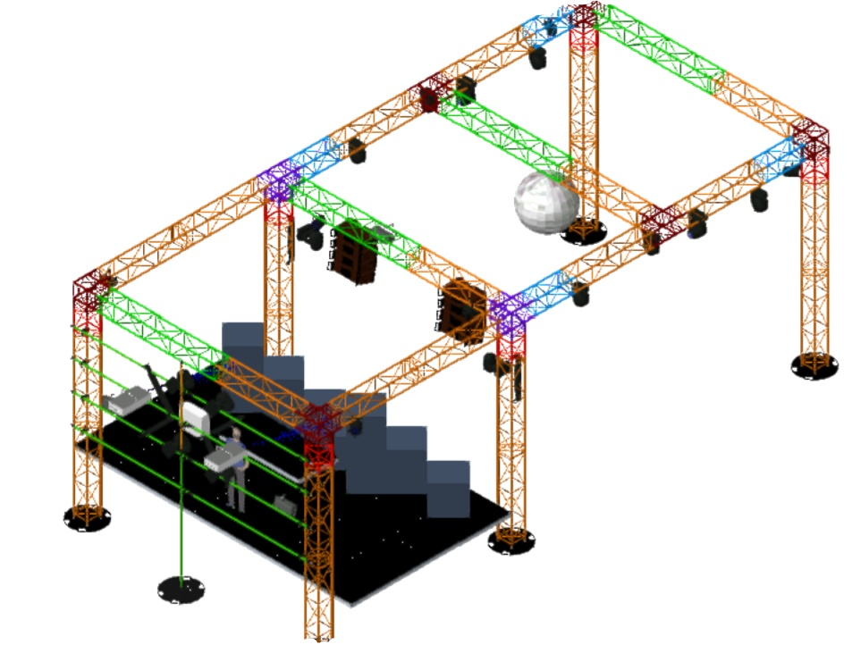

2015 - 2017
24 months sandwish courses
The role of the test technician is to assist operators in the management of the various EDF production tools. They must carry out operating manoeuvres and operate all the facilities remotely. Checking installations and equipment and taking part in tests to ensure correct operation. Constant contact with the other maintenance intervention teams and the unit's other internal and external services.
This first experience strongly conditioned my outlook on my future, particularly because I learned a technical profession, but also because I quickly entered the professional world. It enabled me to understand the expectations of a company and to adopt a professional attitude quickly.
2019
2 months internship
It was an experience that was a first for me in a start-up environment. The strong technological dominance of this pure player combined with its dynamism specific to small structures appealed to me and I learned a lot from it, especially about how to approach problems and solve them. I still consider this activity to be my first entrepreneurial experience.
To find out more about Mr. T-shirt, see the market place
2018
2 months temporary
As part of my mission, I was assigned to a whole mechanical testing project for automotive parts. After establishing the specifications with the client, I managed all the tests and analyses. I then made recommendations on the materials and varnishes to be selected before the products were put into production. The tests had to be carried out in accordance with the standards in force and concerned parts of the passenger compartment and the steering wheel. I was autonomous, but I had to meet deadlines and report my results to the project manager on a regular basis.
Find out more about SGS and the mission I flew.
2018
8 months full time
Following my BTS, I wanted to embark on the adventure and I made the choice to leave with my suitcases and 2 weeks in a hotel in New York City. I wanted to face the challenge of facing life without having planned a roadmap that would have been comfortable and easy for me. To support myself, I did 8 months of service in the Dumonet restaurant, where I learned about customer service and the many uses of American culture.
There I discovered how much rigor is needed in the kitchen to keep up with the imposed rhythms. Find the contact details of the restaurant.
2019 - 2020
12 months association
During the year of my mandate as a trainer for this association, I devoted about 5 hours/week to this activity. I joined this project shortly after its birth in 2019, when it brought together about fifteen young enthusiasts in university spheres in France. Today, the project has more than 110 employees in 10 schools in 2 countries.
You can consult some of my publications HERE, or visit Kryptoshere.org
2019 - 2020
12 months association
BPM is the second-largest student event association in France with 25 employees and a turnover of 75K€. The organization has hosted more than 30 events with more than 10 clients every year in the country. I was president of this association for one year, relaunched the development of its service activity, restructured the teams and their management, and participated in its national influence.
In addition to the related activities, I was project management referent with the participants and service providers. For more information, you can consult these resources and better understand my role in the processes and my activity within this association.
Example of an architecture in the state of drawing before installation.See the whole project